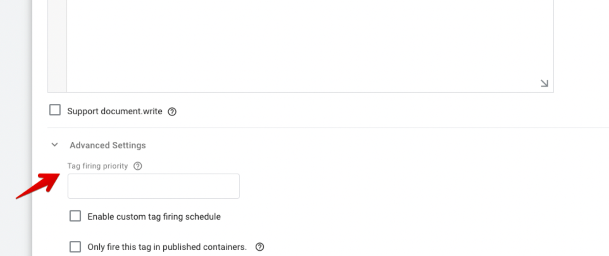

Integrating with a Tag Manager¶
Initialization Script in a Tag Manager: Place the Initialization Script in a tag that is visible in the head template on all pages.
Post Purchase Integration in a Tag Manager: Since the post purchase integration on the checkout confirmation page requires the Init script to work, you’re welcome to combine the Initialization Script + Post Purchase Script script into a single tag for the checkout confirmation page. In fact this is recommended for Google Tag Manager, when combining the place the Initialization script on top/before the Post purchase script in the tag.
Tag Manager Data Layer to Pass Variables: You’ll need to ensure a data layer object is set up to collect and pass the variables to Talkable inside your tag.
Troubleshooting: You can use window._talkableq for all talkableq variable instances if you’re having trouble with variable interpolation and need to use a global namespace.
Potential Performance Impact¶
This section addresses two key considerations for integrating Talkable using Google Tag Manager (GTM):
1. Potential Performance Impact:
In some cases, using GTM to load the Talkable integration code can introduce a slight delay in the referral program’s functionality. This is because GTM typically waits for all its tags to load before executing them.
If you’ve identified performance concerns related to the Talkable integration’s load time, consider the alternative approach outlined below.
2. Safari Private Mode Blocking Third-Party Vendors:
A known issue exists where Safari in private mode blocks third-party vendors, including GTM. This can prevent the Talkable integration code from loading entirely, hindering the referral program’s operation.
Best Practices for Speed Optimization¶
One sure way to optimize the load speed would be to change the Talkable Initialization script placement on the page. If the Talkable script tag is located at the bottom of the page and doesn’t have the “async” attribute, it would wait for other scripts to load first. Adding the attribute to the script and moving it higher in the body or to the head (even better) will prioritize the load.
Make sure the campaign uses optimized image/file sizes and upload lower-resolution versions if it is.
There should be only one copy of the Initialization script on the page. Delete all duplicates if there are any.
Make sure you don’t have JS errors from code executed before Talkable. If there is some critical error, the browser may not be able to process Talkable scripts quickly.
Note
If you use GTM, you can add priority to the tag. The higher the priority, the quicker it gets loaded.

Alternative Approach: Direct Integration¶
To mitigate these potential issues, you can integrate Talkable directly into your web pages without using GTM. Here’s a step-by-step guide on Custom Integration.
Benefits of Direct Integration:
Improved Performance: Eliminates the delay associated with GTM loading all tags before execution.
Enhanced Compatibility: Ensures the Talkable integration code loads even in Safari private mode, where GTM might be blocked.
Choosing the Right Approach:
The optimal approach depends on your specific priorities:
If performance is a critical concern, direct integration is generally recommended.
If you prefer a more centralized tag management system for other integrations, GTM might still be suitable, but be aware of the potential performance impact and Safari private mode blocking.
Additional Considerations:
Thoroughly test both approaches (GTM and direct integration) to ensure the Talkable referral program functions as expected in all browsers and scenarios.
If you encounter further issues, check Talkable’s support resources or contact support team for assistance.
Removing the Talkable Integration Script from GTM¶
If you’ve decided to remove the Talkable integration script from GTM, follow these steps:
Log in to your Google Tag Manager account.
Locate the Talkable integration tag (usually named “Talkable Integration” or similar).
Click on the tag to open its details.
Click the “Delete” button to remove the Talkable integration tag.
Important Note: After removing the Talkable integration script from GTM, you’ll need to implement the direct integration approach documented earlier to ensure Talkable functionality on your website.
Note
Talkable doesn’t recommend adding integration as tags in Google Tag Manager because of slow loading of campaigns for certain user agents as well as GTM being blocked by some Ad blockers